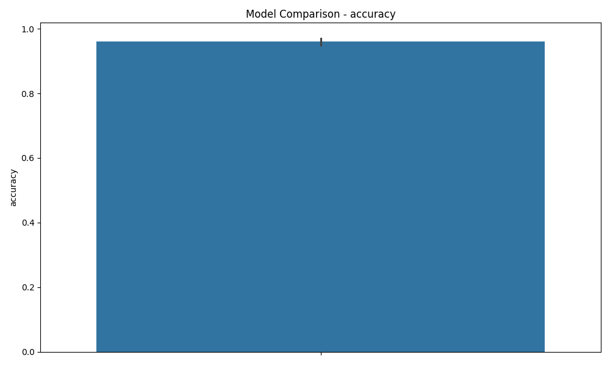
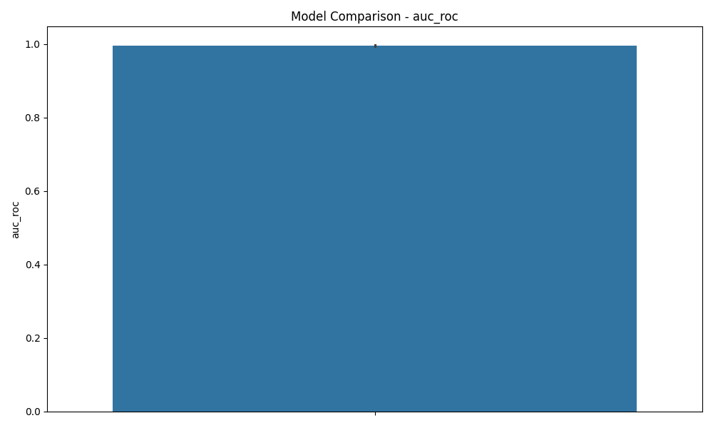
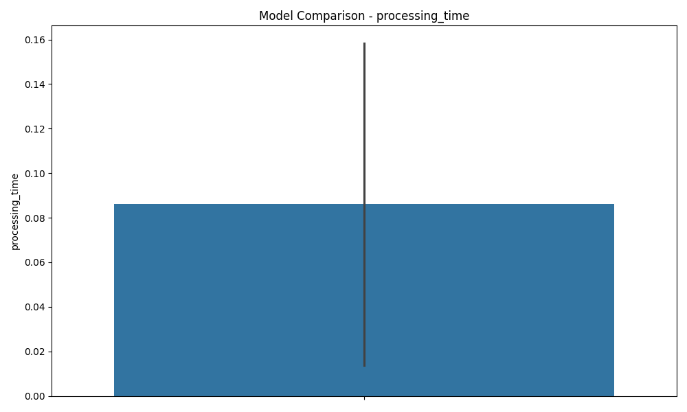
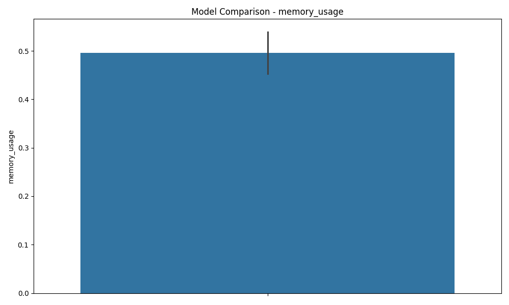

Model Evaluation Report
Generated on: 2025-03-21 15:32:20.486011
Model Comparison
|
accuracy |
macro_f1 |
weighted_f1 |
auc_roc |
processing_time |
memory_usage |
| random_forest |
0.97 |
0.956989 |
0.969527 |
0.997636 |
0.158303 |
0.453125 |
| logistic_regression |
0.95 |
0.925937 |
0.948311 |
0.993325 |
0.013862 |
0.539062 |
Model: random_forest
Confusion Matrix
Classification Report
|
0 |
1 |
accuracy |
macro avg |
weighted avg |
| precision |
0.968153 |
0.976744 |
0.97 |
0.972449 |
0.970172 |
| recall |
0.993464 |
0.893617 |
0.97 |
0.943541 |
0.970000 |
| f1-score |
0.980645 |
0.933333 |
0.97 |
0.956989 |
0.969527 |
| support |
153.000000 |
47.000000 |
0.97 |
200.000000 |
200.000000 |
Model: logistic_regression
Confusion Matrix
Classification Report
|
0 |
1 |
accuracy |
macro avg |
weighted avg |
| precision |
0.944099 |
0.974359 |
0.95 |
0.959229 |
0.951210 |
| recall |
0.993464 |
0.808511 |
0.95 |
0.900987 |
0.950000 |
| f1-score |
0.968153 |
0.883721 |
0.95 |
0.925937 |
0.948311 |
| support |
153.000000 |
47.000000 |
0.95 |
200.000000 |
200.000000 |
accuracy Comparison
auc_roc Comparison
processing_time Comparison
memory_usage Comparison
